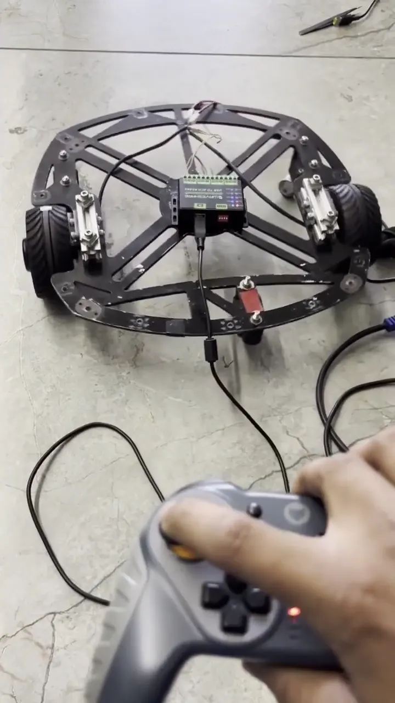
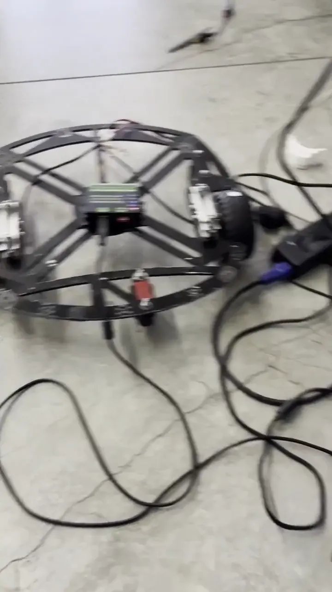

ROS 2 & Embedded Systems
ROS 2 Robot Development & Testing
Visual SLAM, 3D mapping, autonomous docking, an RS-485 motor driver, and micro-ROS firmware on FreeRTOS, integrated on a ROS 2 mobile robot.
- ROS 2
- Nav2
- ORB-SLAM3
- RTAB-Map
- micro-ROS
- FreeRTOS
- RS-485
01Project overview
A body of ROS 2 development and testing on a mobile robotic platform, spanning perception and mapping, autonomous docking, operator tooling, motor communication, and real-time embedded firmware.
Objective
Integrate perception, navigation, and embedded control into one reliable ROS 2 robot stack.
My contribution
- Integrated ORB-SLAM3 with ROS 2 and Nav2 for real-time visual SLAM and localization.
- Implemented RTAB-Map for 3D mapping and loop-closure detection.
- Developed auto-docking using a static docking-station TF frame and NavigateToPose.
- Built a web interface for remote control and monitoring via ROS 2 topics and services.
- Engineered an RS-485 interface for DDSM115 motors with multi-channel, synchronized control.
- Deployed micro-ROS on embedded MCUs for wheel encoders, LEDs, INA219 power sensors, and stepper motors.
02System architecture
- Operator
- Web control & monitoring interface
- ROS 2 topics and services
- Autonomy
- ORB-SLAM3 + Nav2 (visual SLAM, localization)
- RTAB-Map (3D mapping, loop closure)
- Auto-docking (docking-station TF frame + NavigateToPose)
- Embedded
- micro-ROS on MCUs
- FreeRTOS tasks & inter-task communication
- Hardware
- DDSM115 motors over RS-485
- Wheel encoders
- INA219 power sensors
- Stepper motors
- LEDs
03Hardware architecture
- Motors
- DDSM115 motors (RS-485), Stepper motors
- Sensors
- Wheel encoders, INA219 power sensors
- Embedded
- Microcontrollers running micro-ROS
- Communication
- RS-485 (multi-channel)
04Software architecture
- ROS 2
- Nav2
- ORB-SLAM3
- RTAB-Map
- micro-ROS
- FreeRTOS
- Web interface over ROS 2 topics & services
05Engineering challenges
Deterministic sensor sampling on microcontrollers
Implemented FreeRTOS task scheduling and inter-task communication so sensor sampling stays deterministic and actuators run smoothly.
Control-loop jitter
Performed real-time profiling and firmware optimizations to bring control-loop jitter below 5 ms and improve resource efficiency.
Synchronized multi-motor communication
Engineered an RS-485 protocol interface for DDSM115 motors, enabling multi-channel communication and synchronized motor control.
Repeatable docking
Defined the docking station as a static TF frame and drove the robot to it with Nav2’s NavigateToPose action.
06Validation and results
- Control-loop jitter reduced below 5 ms after firmware profiling and optimization.
07Gallery



